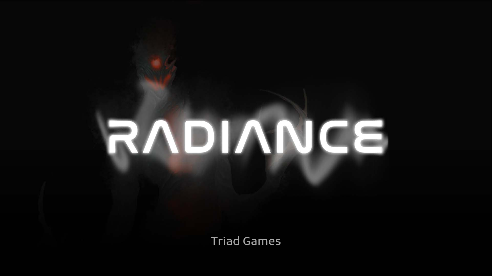
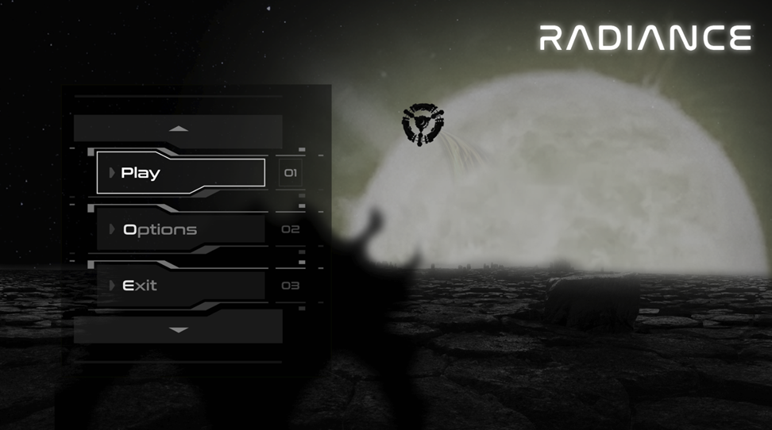

Radiance is a vertical slice where you play as Clarus, a human infused with a mysterious light and an unknown past who is trying to escape from a space station invaded by dark creatures. Use the light manipulator to complete physics puzzles and shoot the enemies while collecting Datapads to learn the lore of the game. Clarus will loose light over time and he will be forced back to the start when he runs out of it. Puzzle progress won't be lost but lives are not infinite so better not be too lazy.
This project was developed by a team of 14 people (5 programmers, 4 designers, 5 artists) as part of my MSc Video Game Developer course at Birmingham City University.
As the initial idea was to have a horror game with physics puzzles, we used "Control" as razor product for its gunplay, telekinesis and mysterious narrative. After some discussion we included "Outer Wilds" and "12 Minutes" as inspiration for their looping mechanic, this allowed us to make the most of the environment and gameplay keeping the game contained.

Loop mechanic: as the game includes a looping mechanic I developed a system to keep track of time and loops left before death but also to manage the distributed process of resetting only specific world elements between cycles.
G-Light Orb: collectible item which extend the loop timer when picked up, implemented using an interface for custom interaction and spatialised sound for more immersivity.
Inventory: a system to store Datapads collected around the game and read them on the inventory widget. Allows interaction with world object based on what is held by the player.
Datapad & Database: collectible object which can be read to learn more about the story of the game. Datapads' information are stored in a master database implemented as an Unreal Data Asset, this avoids duplication of information and eases modifications from designers.